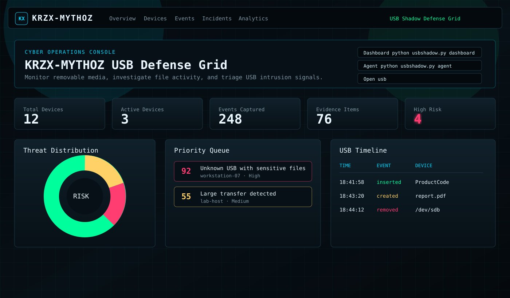

USB Defense Grid for endpoint forensics.
KRZX-MYTHOZ monitors removable media, fingerprints USB devices, tracks file activity, stores evidence hashes, and scores suspicious activity in a cyber SOC dashboard.

Install Once
Run python3 install.py. Services start at login and keep dashboard plus USB agent alive.
Open With One Word
Type usb to open the local dashboard at 127.0.0.1:5000.
Host-Based Monitoring
Linux uses pyudev, Windows uses WMI, and macOS uses diskutil volume detection.